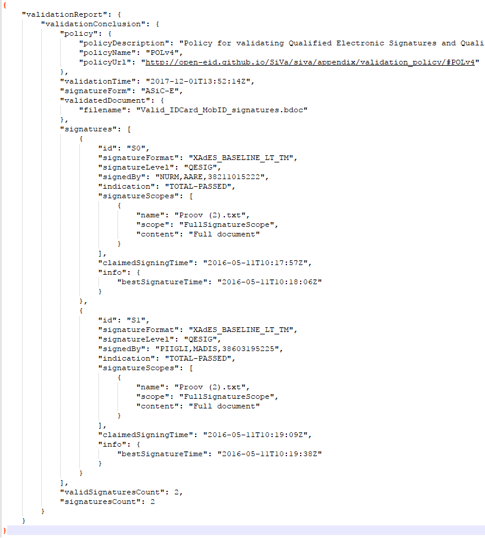

10.5.2 System integrator's guide
This guide describes how to integrate SiVa service with other applications. The following is for system integrators who need to set-up, configure, manage, and troubleshoot SiVa system.
System requirements
Following are the minimum requirements to build and deploy SiVa webapps as a service:
- Java 8 or above Oracle JVM is supported
- Git version control system version 1.8 or above is recommended
- Minimum 2 GB of RAM. Recommended at least 4 GB of RAM
- Minimum 1 processor core
- Open internet connection
- 2GB of free disk space
- Supported operating system is Ubuntu 16.04 LTS
Building
Building SiVa webapps on Ubuntu 16.04
First we need to install Git and Java SDK 8 by issuing below commands:
sudo apt-get update
sudo apt-get install git -y
sudo apt-get install default-jdk -y
Next we need to clone the SiVa Github repository:
git clone https://github.com/open-eid/SiVa.git --branch master
Final step is building the SiVa project using Maven Wrapper
cd SiVa
./mvnw clean install
Note
The build can take up to 30 minutes because there are lot of tests that will be run through and downloading of the required dependencies
To verify that SiVa project built successfully look for BUILD SUCCESS in build compilation output last lines.
The last lines of build output should look very similar to below image:
[INFO] Reactor Summary:
[INFO]
[INFO] SiVa Digitally signed documents validation service . SUCCESS [ 1.632 s]
[INFO] validation-services-parent ......................... SUCCESS [ 0.897 s]
[INFO] validation-commons ................................. SUCCESS [ 12.321 s]
[INFO] tsl-loader ......................................... SUCCESS [ 6.917 s]
[INFO] Generic Validation Service ......................... SUCCESS [ 27.919 s]
[INFO] TimeStampToken Validation Service .................. SUCCESS [ 7.046 s]
[INFO] BDOC Validation Service ............................ SUCCESS [ 50.087 s]
[INFO] DDOC Validation Service ............................ SUCCESS [ 16.712 s]
[INFO] SiVa webapp and other core modules ................. SUCCESS [ 0.653 s]
[INFO] siva-monitoring .................................... SUCCESS [ 9.736 s]
[INFO] xroad-validation-service ........................... SUCCESS [ 19.761 s]
[INFO] siva-statistics .................................... SUCCESS [ 13.734 s]
[INFO] SiVa validation service proxy ...................... SUCCESS [ 11.509 s]
[INFO] SiVa signature service ............................. SUCCESS [ 6.869 s]
[INFO] siva-webapp ........................................ SUCCESS [ 27.608 s]
[INFO] SiVa Web Service integration tests ................. SUCCESS [03:53 min]
[INFO] siva-distribution .................................. SUCCESS [ 10.818 s]
[INFO] ------------------------------------------------------------------------
[INFO] BUILD SUCCESS
[INFO] ------------------------------------------------------------------------
[INFO] Total time: 08:18 min
[INFO] Finished at: 2017-12-04T13:49:48+02:00
[INFO] Final Memory: 113M/903M
[INFO] ------------------------------------------------------------------------
Deploying
OPTION 1 - starting webapps from command line
SiVa project compiles 2 fat executable JAR files that you can run after successfully building the project by issuing below commands:
First start the Siva webapp
./siva-parent/siva-webapp/target/siva-webapp-3.0.0.jar
Second we need to start X-road validation webapp
./validation-services-parent/xroad-validation-service/target/xroad-validation-service-3.0.0.jar
The SiVa webapp by default runs on port 8080 and XRoad validation service starts up on port 8081. Easiest way to test out validation is run SiVa demo application.
OPTION 2 - running webapps as systemd services
Maven build generates executable JAR files. This means web container and all its dependencies are package inside single JAR file. It makes a lot easier to deploy it into servers.
Easiest option to setup SiVa is as systemd service in Ubuntu servers.
For that we first need to create service file:
vim siva-webapp.service
Inside it we need to paste below text. You need to change few things in service setup file.
- First you must not run service as
root. So it's strongly recommended to change lineUser=root - Second You can change Java JVM options by modifying the
JAVA_OPTSinside thesiva-webapp.servicefile. - Also You can change the SiVa application configuration options by modifying
RUN_ARGSsection in file
[Unit]
Description=siva-webapp
After=syslog.target
[Service]
User=root
ExecStart=/var/apps/siva-webapp.jar
Environment=JAVA_OPTS=-Xmx320m RUN_ARGS=--server.port=80
SuccessExitStatus=143
[Install]
WantedBy=multi-user.target
Save and close the siva-webapp.service file.
Next we need to move siva-webapp-3.0.0.jar into newly created /var/apps directory and rename to
JAR file to siva-webapp.jar. match
Note
The copied JAR filename must match option ExecStart in siva-webapp.service file
sudo mkdir /var/apps
sudo cp siva-parent/siva-webapp/target/executable/siva-webapp-3.0.0.jar /var/apps/siva-webapp.jar
Next we need to copy the siva-webapp.service file into /lib/systemd/system directory.
Then we are ready to start the siva-webapp service.
sudo cp siva-webapp.service /lib/systemd/system
sudo systemctl start siva-webapp
Final step of setting up the siva-webapp service is to verify that service started correctly by issuing below
command.
systemctl status siva-webapp
It should print out similar to below picture:
● siva-webapp.service - siva-webapp
Loaded: loaded (/lib/systemd/system/siva-webapp.service; disabled; vendor preset: enabled)
Active: active (running) since Thu 2016-07-21 08:48:14 EDT; 1 day 2h ago
Main PID: 15965 (siva-webapp.jar)
Tasks: 34
Memory: 429.6M
CPU: 2min 5.721s
CGroup: /system.slice/siva-webapp.service
├─15965 /bin/bash /var/apps/stage/siva-webapp.jar
└─15982 /usr/bin/java -Dsun.misc.URLClassPath.disableJarChecking=true -Xmx320m -jar /var/apps/stage/siva-webapp.jar
Jul 20 03:00:01 siva siva-webapp.jar[15965]: at eu.europa.esig.dss.tsl.service.TSLParser.getTslModel(TSLParser.java:143)
Jul 20 03:00:01 siva siva-webapp.jar[15965]: at eu.europa.esig.dss.tsl.service.TSLParser.call(TSLParser.java:129)
Jul 20 03:00:01 siva siva-webapp.jar[15965]: ... 5 common frames omitted
Jul 20 03:00:01 siva siva-webapp.jar[15965]: 20.07.2016 03:00:01.450 INFO [pool-3-thread-1] [e.e.e.dss.tsl.service.TSLRepository.sync
Jul 20 03:00:01 siva siva-webapp.jar[15965]: 20.07.2016 03:00:01.450 INFO [pool-3-thread-1] [e.e.e.dss.tsl.service.TSLRepository.sync
OPTION 3 - deploy webapps as war files (Tomcat setup for legacy systems)
NOTE 1: We do not recommend using WAR deployment option because lack of testing done on different servlet containers also possible container application libraries conflicts
NOTE 2: Each SiVa service must be deployed to separate instance of Tomcat to avoid Java JAR library version conflicts.
NOTE 3: To limit your webapp request size (this is set automatically when deploying service as jar) one needs to configure the container manually. For example, when using Tomcat 7 or Tomcat 8 - the http connector parameter
maxPostSizeshould be configured with the desired limit.NOTE 4: The war file must be deployed to Tomcat ROOT.
First we need to download Tomcat web servlet container as of the writing latest version available in version 8 branch is 8.5.24. We will download it with wget
wget http://www-eu.apache.org/dist/tomcat/tomcat-8/v8.5.24/bin/apache-tomcat-8.5.24.tar.gz
Unpack it somewhere:
tar xf apache-tomcat-8.5.24.tar.gz
Now we should build the WAR file. We have created helper script with all the correct Maven parameters.
./war-build.sh
NOTE The script will skip running the integration tests when building WAR files
Final steps would be copying built WAR file into Tomcat webapps directory and starting the servlet container.
cp siva-parent/siva-webapp/target/siva-webapp-3.0.0.war apache-tomcat-8.5.24/webapps
./apache-tomcat-7.0.77/bin/catalina.sh run
IMPORTANT siva-webapp on startup creates
etcdirectory where it copies the TSL validaiton certificatessiva-keystore.jks. Default location for this directory is application root or$CATALINA_HOME. To change this default behavior you should set environment variableDSS_DATA_FOLDER
How-to set WAR deployed SiVa application.properties
SiVa override properties can be set using application.properties file. The file can locate anywhare in the host system.
To make properties file accessible for SiVa you need to create or edit setenv.sh placed inside bin directory.
Contents of the setenv.sh file should look like:
export CATALINA_OPTS="-Dspring.config.location=file:/path/to/application.properties"
Smoke testing your deployed system
Step 1. Install HTTPIE
httpie is more user friendly version of curl and we will use to verify that SiVa was installed
and started correctly on our server.
If you have Python and its package manager pip installed. Then You can issue below command:
pip install httpie
Step 2. Download a sample JSON request file.
http --download https://raw.githubusercontent.com/open-eid/SiVa/develop/build-helpers/sample-requests/bdocPass.json
Step 3. After successful download issue below command in same directory where you downloaded the file using the command below.
http POST http://localhost:8080/validate < bdocPass.json
Step 4. Verify the output. The output of previous command should have similar data as below screenshot. Look for signatureCount and
validSignatureCount, they must be equal.

Logging
By default, logging works on the INFO level and logs are directed to the system console only. Logging functionality is handled by the SLF4J logging facade and on top of the Logback framework. As a result, logging can be configured via the standard Logback configuration file through Spring boot. Additional logging appenders can be added. Consult logback documentation for more details on log file structure.
For example, adding application.properties to classpath with the logging.config property
logging.config=/path/to/logback.xml
Statistics
For every report validated, a statistical report is composed that collects the following data:
| Data | Description |
|---|---|
| Validation duration | The time it takes to process an incoming request - measured in milliseconds |
| Container type | Container type ( text value that identifies the signature type of the incoming document: ASiC-E, XAdES, ASiC-S or ASiC-E (BatchSignature) ) |
| Siva User ID | String (Text data that contains the SiVa user identifier for reports (from the HTTP x-authenticated-user header) or N/A) |
| Total signatures count | The value of the signaturesCount element in the validation report |
| Valid signatures count | The value of the validSignaturesCount element in the validation report |
| Signature validation indication(s) | Values of elements signatures/indication and signatures/subindication from the validation report. indication[/subindication] |
| Signature country/countries | Country code extracted from the signer certs. The ISO-3166-1 alpha-2 country code that is associated with signature (the signing certificate). Or constant string "XX" if the country cannot be determined. |
| Signature format(s) | Values of element signatures/signatureFormat from the validation report. |
There are two channels where this information is sent:
-
Log feeds (at INFO level) which can be redirected to files or to a syslog feed.
-
Google Analytics service (as GA events). Turned off by default. See Configuration parameters for further details.
The format and events are described in more detail in SiVa_statistics.pdf
Monitoring
SiVa webapps provide an endpoint for external monitoring tools to periodically check the generic service health status.
Note
Note that this endpoint is disabled by default.
The url for accessing JSON formatted health information with HTTP GET is /monitoring/health or /monitoring/health.json. See the Interfaces section for response structure and details.
- Enabling and disabling the monitoring endpoint
To enable the endpoint, use the following configuration parameter:
endpoints.health.enabled=true
- Customizing external service health indicators
The endpoint is implemented as a customized Spring boot health endpoint, which allows to add custom health indicators.
Demo webapp and Siva webapp also include additional information about the health of their dependent services.
These links to dependent web services have been preconfigured. For example, the Demo webapp is preset to check whether the Siva webapp is accessible from the following url (parameter siva.service.serviceHost value)/monitoring/health and the Siva webapp verifies that the X-road validation service webapp is accessible by checking the default url (configured by parameter siva.proxy.xroadUrl value)/monitoring/health url.
However, using the following parameters, these links can be overridden:
| Property | Description |
|---|---|
| endpoints.health.links[index].name | A short link name
|
| endpoints.health.links[index].url | URL to another monitoring endpoint that produces Spring boot health endpoint compatible JSON object as a response to HTTP GET.
|
| endpoints.health.links[index].timeout | Connection timeout (in milliseconds)
|
For example:
endpoints.health.links[0].name=linkToXroad
endpoints.health.links[0].url=http://localhost:7777/monitoring/health
endpoints.health.links[0].timeout=1000
Note
The external link configuration must be explicitly set when the monitoring service on the target machine is configured to run on a different port as the target service itself(ie using the management.port option in configuration) .
Validation Report Signature
SiVa provides the ability to sign the validation report. The idea of supplementing the validation report with a validation report signature is to prove the authority's authenticity and integrity over the validation.
Note
Signing of validation report is disabled by default
To enable it, use the following configuration parameter:
siva.report.reportSignatureEnabled=true
When validation report signature is enabled, only detailed validation reports will be signed, simple reports will not be signed.
The validation report's digital signature is composed out of response's validationReport object. The target format of the signature is ASiC-E (signature level is configurable). The ASiC-E container contents are encoded into Base64 and put on the same level int the response as the validation report itself.
Note
Enabling the validation report signing will affect the performance of the service.
Example structure of the response containing report signature:
{
"validationReport": {
...
},
"validationReportSignature": "ZHNmYmhkZmdoZGcgZmRmMTM0NTM..."
}
Supported interfaces for signature creation:
- PKCS#11 - a platform-independent API for cryptographic tokens, such as hardware security modules (HSM) and smart cards
- PKCS#12 - for files bundled with private key and certificate
Report signature configuration parameters:
| Property | Description |
|---|---|
| siva.report.reportSignatureEnabled | Enables signing of the validation report. Validation report will only be signed when requesting detailed report.
|
| siva.signatureService.signatureLevel | The level of the validation report signature. Example values: * XAdES_BASELINE_B * XAdES_BASELINE_T * XAdES_BASELINE_LT * XAdES_BASELINE_LTA |
| siva.signatureService.tspUrl | URL of the timestamp provider. Only needed when the configured signature level is at least XAdES_BASELINE_T |
| siva.signatureService.ocspUrl | URL of the OCSP provider. Only needed when the configured signature level is at least XAdES_BASELINE_LT |
| siva.signatureService.pkcs11.path | path to PKCS#11 module (depends on your installed smart card or hardware token library, for example: /usr/local/lib/opensc-pkcs11.so) |
| siva.signatureService.pkcs11.password | pin/password of the smart card or hardware token |
| siva.signatureService.pkcs11.slotIndex | depends on the hardware token. E.g. Estonian Smart Card uses 2, USB eToken uses 0.
|
| siva.signatureService.pkcs12.path | path to keystore file containing certificate and private key |
| siva.signatureService.pkcs12.password | password of the keystore file containing certificate and private key |
Note
When configuring report signature, either PKCS#11 or PKCS#12 should be configured, no need to configure both.
Configuration parameters
All SiVa webapps have been designed to run with predetermined defaults after building and without additional configuration. However, all the properties can be overridden on the service or embedded web server level, if necessary.
By default, the service loads it's global configuration from the application.yml file that is packaged inside the jar file. Default configuration parameters can be overridden by providing custom application.yml in the following locations, or using command line parameters or by using other externalized configuration methods methods.
For example, to configure the embedded Tomcat web server inside a fat jar to run on different port (default is 8080), change the server.port following property:
server.port=8080
Or to increase or modify the default http request limit, override the server.max-http-post-size property:
server.max-http-post-size: 13981016
See the reference list of all common application properties provided by Spring boot
Siva webapp parameters
- Updating TSL
| Property | Description |
|---|---|
| siva.tsl.loader.loadFromCache | A boolean value that determines, whether the TSL disk cache is updated by downloading a new TSL in a predetermined interval Note that the cache is by default stored in a system temporary folder (can be set with system property java.io.tmpdir) in a subdirectory named dss_cache_tsl
|
| siva.tsl.loader.url | A url value that points to the external TSL
|
| siva.tsl.loader.code | Sets the LOTL code in DSS
|
| siva.tsl.loader.trustedTerritories | Sets the trusted territories by countries
|
| siva.tsl.loader.schedulerCron | A string in a Crontab expression format that defines the interval at which the TSL renewal process is started. The default is 03:00 every day (local time)
|
| siva.keystore.type | Keystore type. Keystore that contains public keys to verify the signed TSL
|
| siva.keystore.filename | Keystore that contains public keys to verify the signed TSL
|
| siva.keystore.password | Keystore password. Keystore that contains public keys to verify the signed TSL
|
Note
Note that the keystore file location can be overriden using environment variable DSS_DATA_FOLDER. By default the keystore file location, is expected to be on local filesystem in etc directory which is at the same level with the fat jar file (one is created, if no such directory exists).
Note
TSL is currently used only by Generic and BDOC validators
- Forward to custom X-road webapp instance
| Property | Description |
|---|---|
| siva.proxy.xroadUrl | A URL where the X-Road validation requests are forwarded
|
- Collecting statistics with Google Analytics
| Property | Description |
|---|---|
| siva.statistics.google-analytics.enabled | Enables/disables the service
|
| siva.statistics.google-analytics.url | Statistics endpoint URL
|
| siva.statistics.google-analytics.trackingId | The Google Analytics tracking ID
|
| siva.statistics.google-analytics.dataSourceName | Descriptive text of the system
|
- BDOC validation parameters
| Property | Description |
|---|---|
| siva.bdoc.digidoc4JConfigurationFile | Path to Digidoc4j configuration override
|
Customizing BDOC validation policies
| Property | Description |
|---|---|
| siva.bdoc.signaturePolicy.defaultPolicy | Selected default policy name
|
| siva.bdoc.signaturePolicy.policies[index].name | Policy name
|
| siva.bdoc.signaturePolicy.policies[index].description | Policy description
|
| siva.bdoc.signaturePolicy.policies[index].constraintPath | Constraint XML file path for the policy. An absolute path or a reference to a resource on the classpath
|
| siva.bdoc.signaturePolicy.policies[index].url | Policy URL
|
By default, the following configuration is used
siva.bdoc.signaturePolicy.policies[0].name=POLv3
siva.bdoc.signaturePolicy.policies[0].description=Policy for validating Electronic Signatures and Electronic Seals regardless of the legal type of the signature or seal (according to Regulation (EU) No 910/2014), i.e. the fact that the electronic signature or electronic seal is either Advanced electronic Signature (AdES), AdES supported by a Qualified Certificate (AdES/QC) or a Qualified electronic Signature (QES) does not change the total validation result of the signature.
siva.bdoc.signaturePolicy.policies[0].url=http://open-eid.github.io/SiVa/siva2/appendix/validation_policy/#POLv3
siva.bdoc.signaturePolicy.policies[0].constraintPath=bdoc_constraint_no_type.xml
siva.bdoc.signaturePolicy.policies[1].name=POLv4
siva.bdoc.signaturePolicy.policies[1].description=Policy for validating Qualified Electronic Signatures and Qualified Electronic Seals (according to Regulation (EU) No 910/2014). I.e. signatures that have been recognized as Advanced electronic Signatures (AdES) and AdES supported by a Qualified Certificate (AdES/QC) do not produce a positive validation result.
siva.bdoc.signaturePolicy.policies[1].url=http://open-eid.github.io/SiVa/siva2/appendix/validation_policy/#POLv4
siva.bdoc.signaturePolicy.policies[1].constraintPath=bdoc_constraint_qes.xml
siva.bdoc.signaturePolicy.defaultPolicy=POLv4
Note
Default policy configuration is lost when policy detail properties (name, description, url or constraintPath) are overridden or new custom policies added in custom configuration files (in this case, the existing default policies must be redefined in configuration files explicitly)
- Generic validation - customize validation policies
| Property | Description |
|---|---|
| siva.europe.signaturePolicy.defaultPolicy | Selected default policy name
|
| siva.europe.signaturePolicy.policies[index].name | Policy name
|
| siva.europe.signaturePolicy.policies[index].description | Policy description
|
| siva.europe.signaturePolicy.policies[index].constraintPath | Constraint XML file path for the policy. An absolute path or a reference to a resource on the classpath
|
| siva.europe.signaturePolicy.policies[index].url | Policy URL
|
By default, the following configuration is used
siva.europe.signaturePolicy.policies[0].name=POLv3
siva.europe.signaturePolicy.policies[0].description=Policy for validating Electronic Signatures and Electronic Seals regardless of the legal type of the signature or seal (according to Regulation (EU) No 910/2014), i.e. the fact that the electronic signature or electronic seal is either Advanced electronic Signature (AdES), AdES supported by a Qualified Certificate (AdES/QC) or a Qualified electronic Signature (QES) does not change the total validation result of the signature.
siva.europe.signaturePolicy.policies[0].url=http://open-eid.github.io/SiVa/siva2/appendix/validation_policy/#POLv3
siva.europe.signaturePolicy.policies[0].constraintPath=generic_constraint_ades.xml
siva.europe.signaturePolicy.policies[1].name=POLv4
siva.europe.signaturePolicy.policies[1].description=Policy for validating Qualified Electronic Signatures and Qualified Electronic Seals (according to Regulation (EU) No 910/2014). I.e. signatures that have been recognized as Advanced electronic Signatures (AdES) and AdES supported by a Qualified Certificate (AdES/QC) do not produce a positive validation result.
siva.europe.signaturePolicy.policies[1].url=http://open-eid.github.io/SiVa/siva2/appendix/validation_policy/#POLv4
siva.europe.signaturePolicy.policies[1].constraintPath=generic_constraint_qes.xml
siva.europe.signaturePolicy.defaultPolicy=POLv4
Note
Default policy configuration is lost when policy detail properties (name, description, url or constraintPath) are overridden or new custom policies added in custom configuration files (in this case, the existing default policies must be redefined in configuration files explicitly)
- DDOC validation
| Property | Description |
|---|---|
| siva.ddoc.jdigidocConfigurationFile | Path to JDigidoc configuration file. Determines the Jdigidoc configuration parameters (see JDigidoc manual for details.
|
Customizing DDOC validation policies:
| Property | Description |
|---|---|
| siva.ddoc.signaturePolicy.defaultPolicy | Selected default policy name
|
| siva.ddoc.signaturePolicy.policies[index].name | Policy name
|
| siva.ddoc.signaturePolicy.policies[index].description | Policy description
|
| siva.ddoc.signaturePolicy.policies[index].constraintPath | Constraint XML file path for the policy. An absolute path or a reference to a resource on the classpath
|
| siva.ddoc.signaturePolicy.policies[index].url | Policy URL
|
By default, the following configuration is used
siva.ddoc.signaturePolicy.policies[0].name=POLv3
siva.ddoc.signaturePolicy.policies[0].description=Policy for validating Electronic Signatures and Electronic Seals regardless of the legal type of the signature or seal (according to Regulation (EU) No 910/2014), i.e. the fact that the electronic signature or electronic seal is either Advanced electronic Signature (AdES), AdES supported by a Qualified Certificate (AdES/QC) or a Qualified electronic Signature (QES) does not change the total validation result of the signature.
siva.ddoc.signaturePolicy.policies[0].url=http://open-eid.github.io/SiVa/siva2/appendix/validation_policy/#POLv3
siva.ddoc.signaturePolicy.policies[0].constraintPath=ddoc_constraint_no_type.xml
siva.ddoc.signaturePolicy.policies[1].name=POLv4
siva.ddoc.signaturePolicy.policies[1].description=Policy for validating Qualified Electronic Signatures and Qualified Electronic Seals (according to Regulation (EU) No 910/2014). I.e. signatures that have been recognized as Advanced electronic Signatures (AdES) and AdES supported by a Qualified Certificate (AdES/QC) do not produce a positive validation result.
siva.ddoc.signaturePolicy.policies[1].url=http://open-eid.github.io/SiVa/siva2/appendix/validation_policy/#POLv4
siva.ddoc.signaturePolicy.policies[1].constraintPath=ddoc_constraint_qes.xml
siva.ddoc.signaturePolicy.defaultPolicy=POLv4
Note
Default policy configuration is lost when policy detail properties (name, description, url or constraintPath) are overridden or new custom policies added in custom configuration files (in this case, the existing default policies must be redefined in configuration files explicitly)
- X-road validation
| Property | Description |
|---|---|
| siva.xroad.validation.service.configurationDirectoryPath | Directory that contains the certs of approved CA's, TSA's and list of members
|
| Property | Description |
|---|---|
| siva.xroad.signaturePolicy.defaultPolicy | Selected default policy name
|
| siva.xroad.signaturePolicy.policies[index].name | Policy name
|
| siva.xroad.signaturePolicy.policies[index].description | Policy description
|
| siva.xroad.signaturePolicy.policies[index].constraintPath | Constraint XML file path for the policy. An absolute path or a reference to a resource on the classpath
|
| siva.xroad.signaturePolicy.policies[index].url | Policy URL
|
By default, the following configuration is used
siva.xroad.signaturePolicy.policies[0].name=POLv3
siva.xroad.signaturePolicy.policies[0].description=Policy for validating Electronic Signatures and Electronic Seals regardless of the legal type of the signature or seal (according to Regulation (EU) No 910/2014), i.e. the fact that the electronic signature or electronic seal is either Advanced electronic Signature (AdES), AdES supported by a Qualified Certificate (AdES/QC) or a Qualified electronic Signature (QES) does not change the total validation result of the signature.
siva.xroad.signaturePolicy.policies[0].url=http://open-eid.github.io/SiVa/siva2/appendix/validation_policy/#POLv3
siva.xroad.signaturePolicy.policies[0].constraintPath=xroad_constraint_no_type.xml
siva.xroad.signaturePolicy.defaultPolicy= POLv3
Note
Default policy configuration is lost when policy detail properties (name, description, url or constraintPath) are overridden or new custom policies added in custom configuration files (in this case, the existing default policies must be redefined in configuration files explicitly)
Note
By default, X-road validation currently supports only POLv3
Demo webapp parameters
- Linking to SiVa webapp
| Property | Description |
|---|---|
| siva.service.serviceHost | An HTTP URL link to the Siva webapp
|
| siva.service.jsonServicePath | Service path in Siva webapp to access the REST/JSON API
|
| siva.service.soapServicePath | Service path in Siva webapp to access the SOAP API
|
| siva.service.jsonDataFilesServicePath | Data file service path in Siva webapp to access the REST/JSON API
|
| siva.service.soapDataFilesServicePath | Data file service path in Siva webapp to access the SOAP API
|